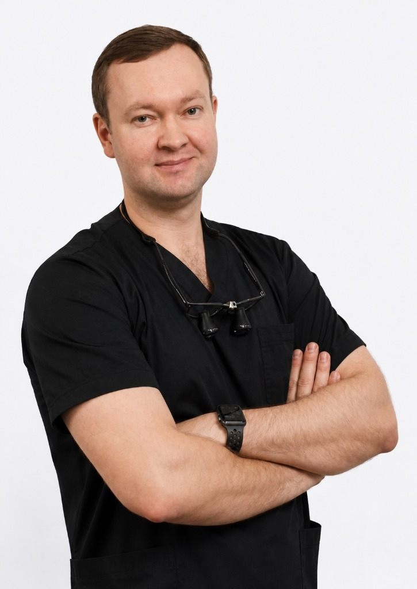
Стоматолог-ортопед, терапевт · Засновник і головний лікар Harmony Clinic
Записатися на прийомМалюкін Андрій Віталійович — стоматолог-ортопед і терапевт із понад десятирічним досвідом клінічної практики, засновник та головний лікар стоматологічної клініки Harmony Clinic в Одесі. Спеціалізується на естетичній реставрації фронтальних зубів, протезуванні на імплантах за цифровим протоколом та ортопедичних роботах із керамічних матеріалів.
Прийом ведеться в клініці Harmony Clinic за адресою м. Одеса, вул. Новаторів, 1А. Клініку засновано разом із дружиною — лікарем-терапевтом Малюкіною Ольгою — як сімейну стоматологію, в якій кожен план лікування супроводжується особисто головним лікарем.
Регулярна участь у міжнародних навчальних програмах: естетична реставрація фронтальної групи зубів, сучасні протоколи дентальної імплантації, протезування на імплантах All-on-4 / All-on-6, цифрова стоматологія, протоколи мінімально-інвазивного лікування.
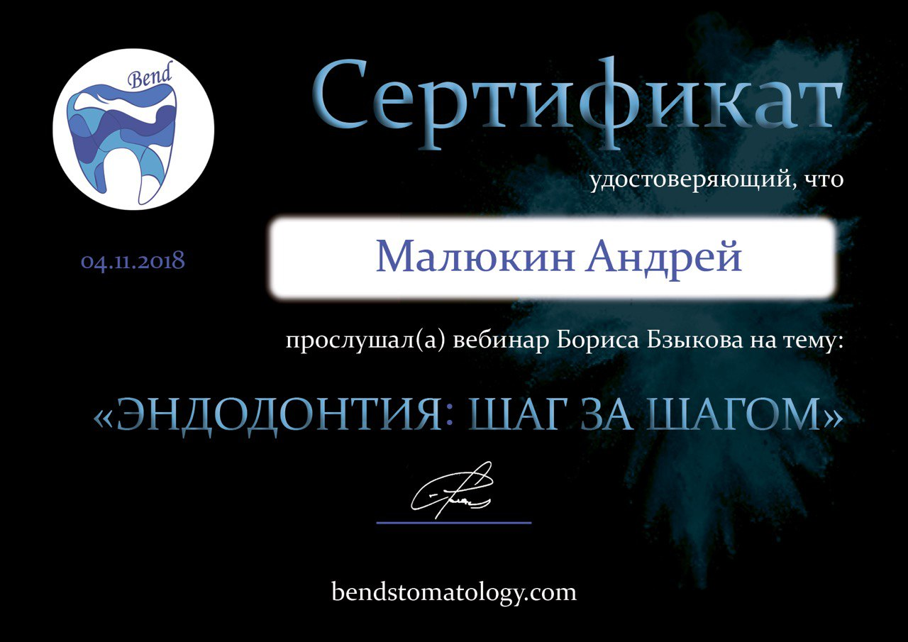
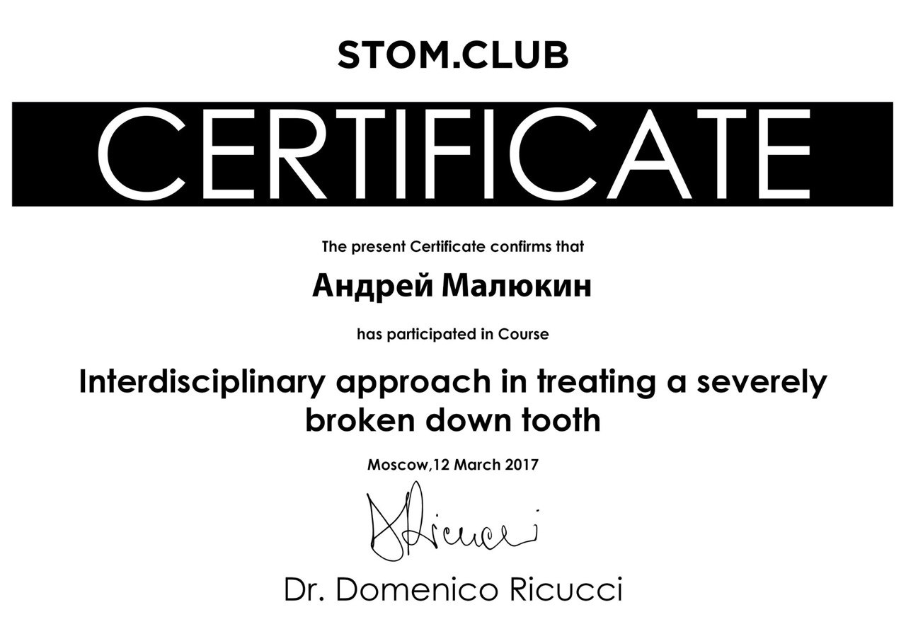
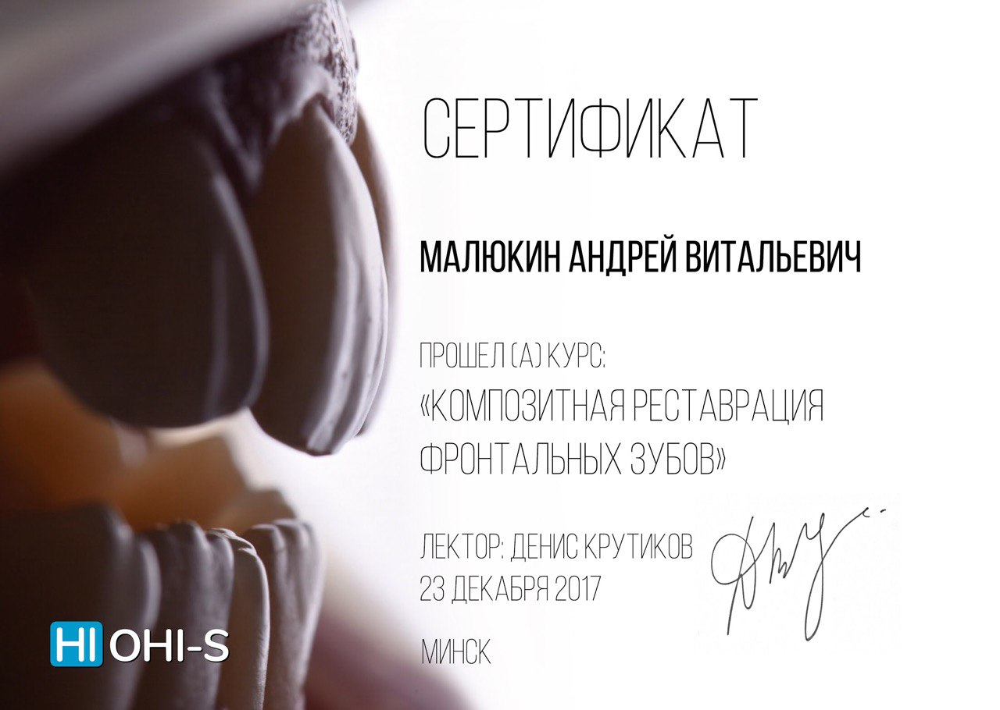
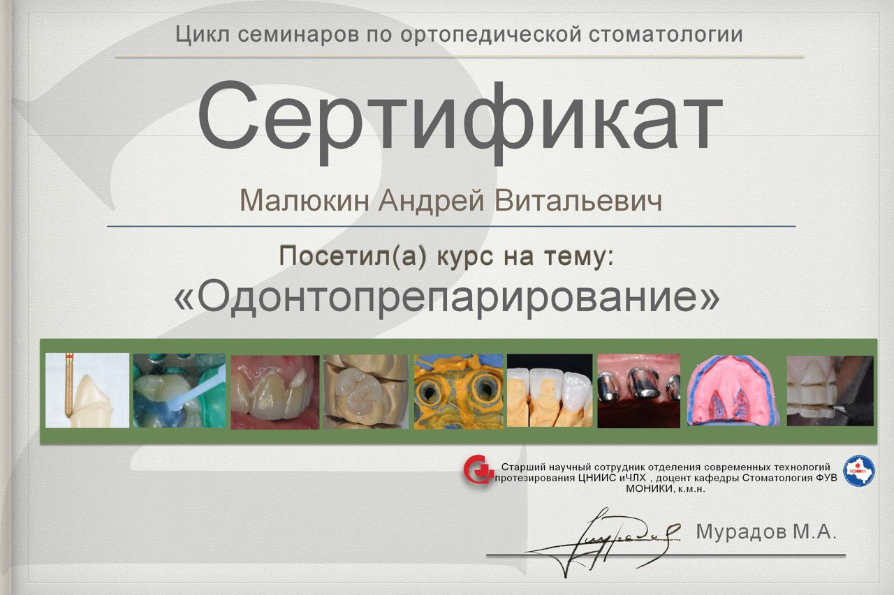
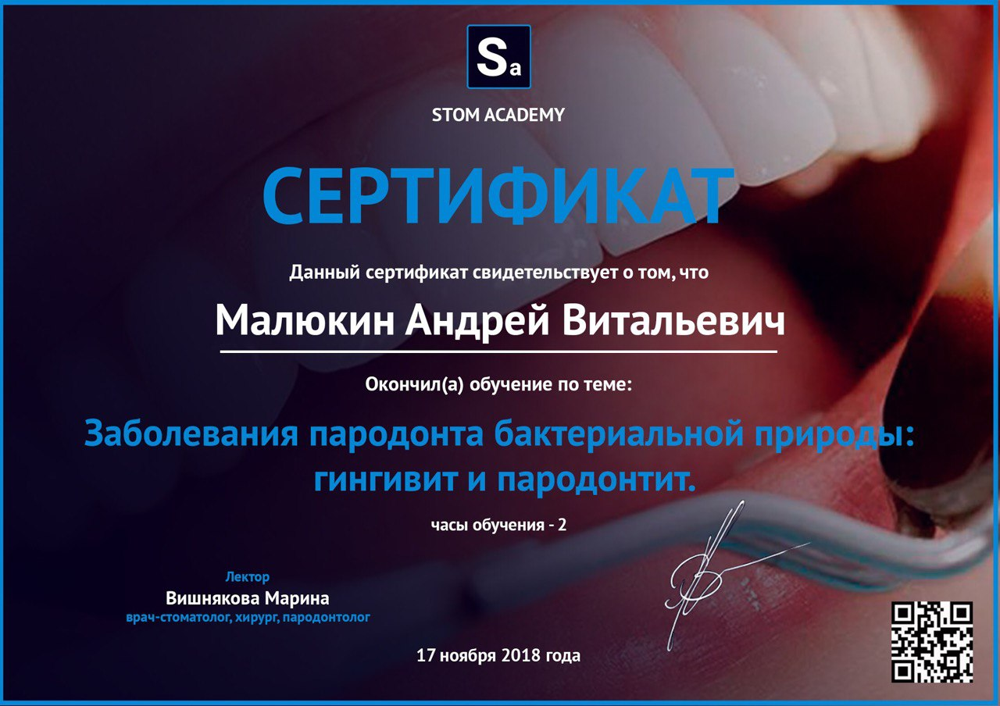
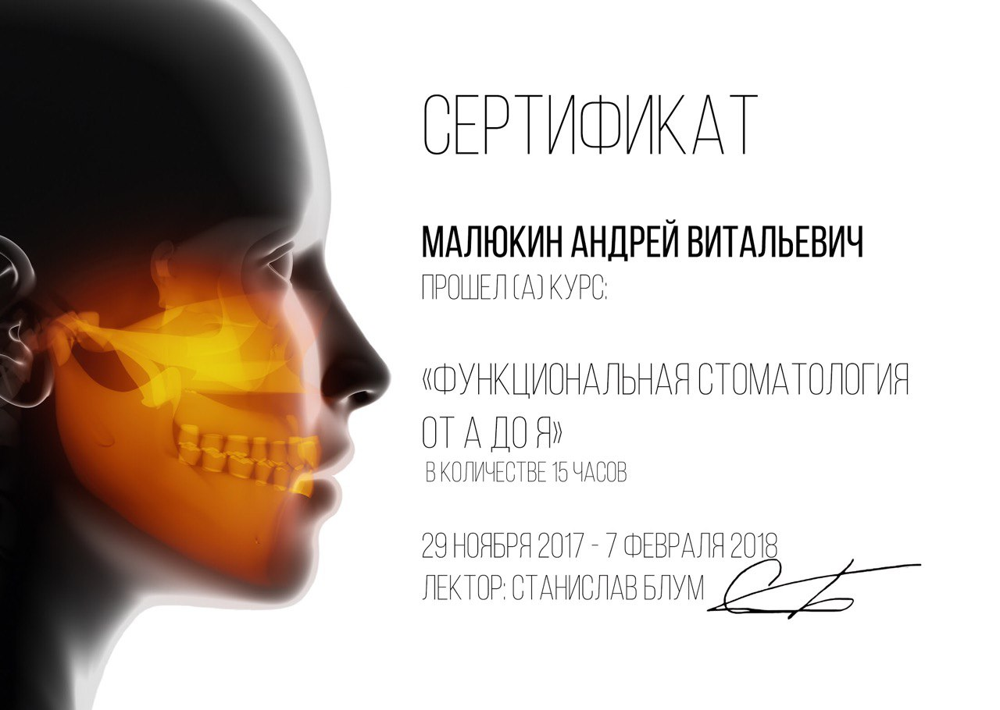
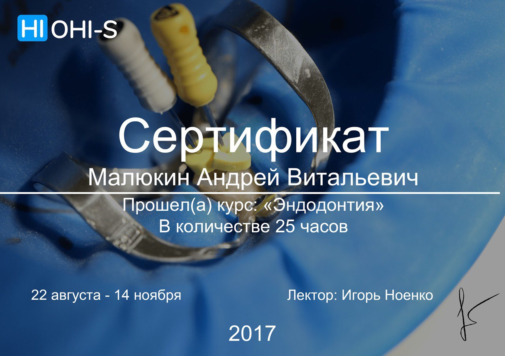
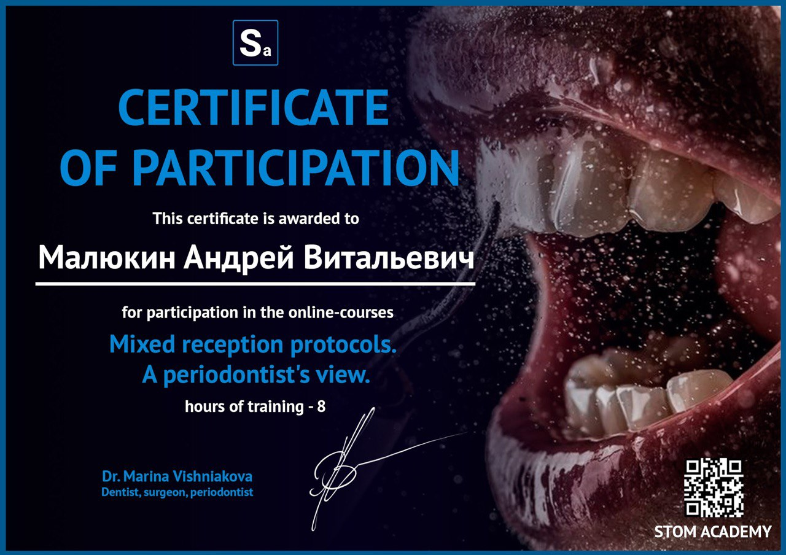
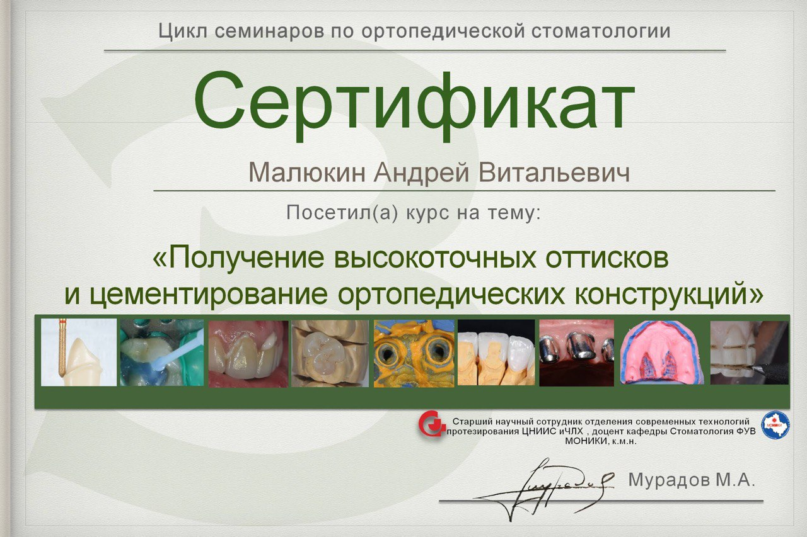
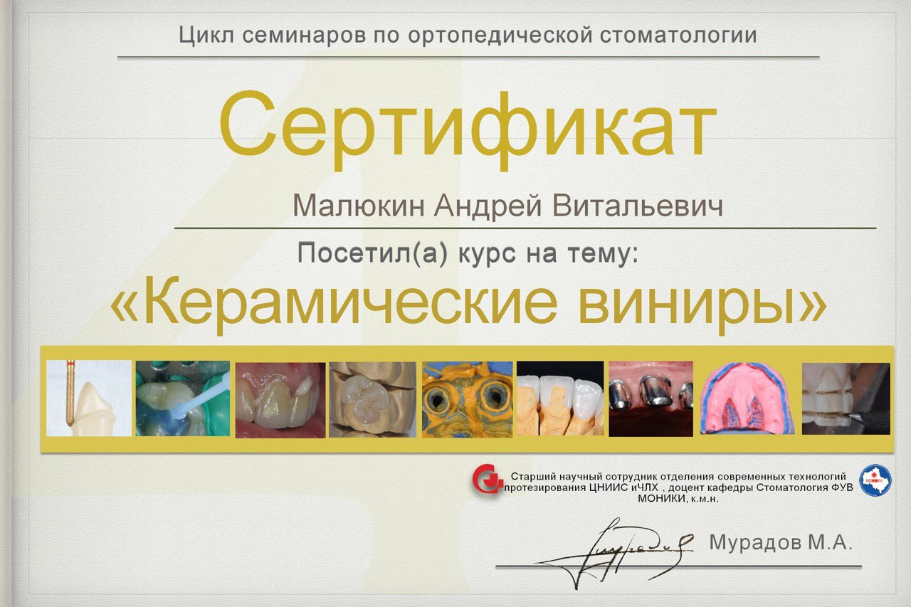
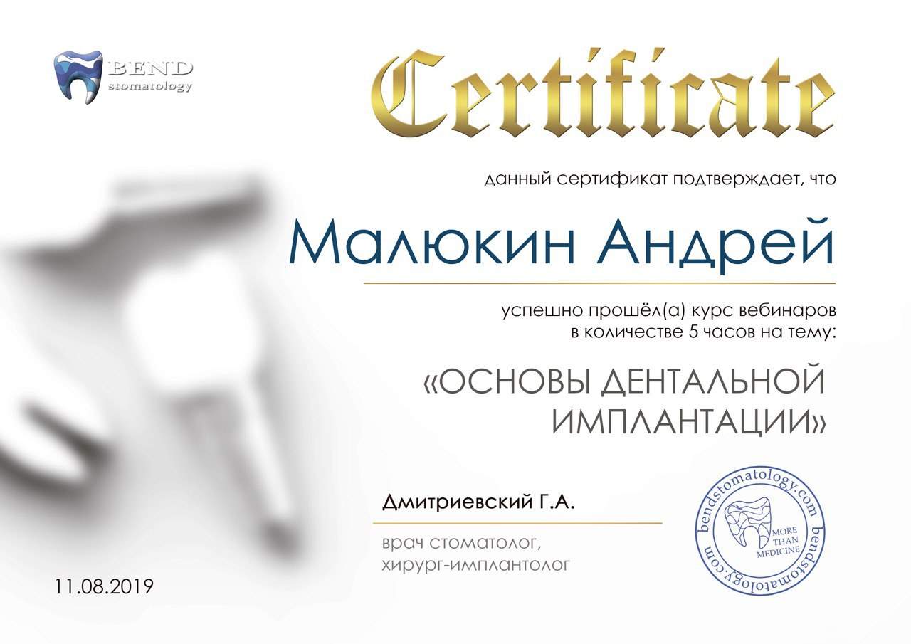
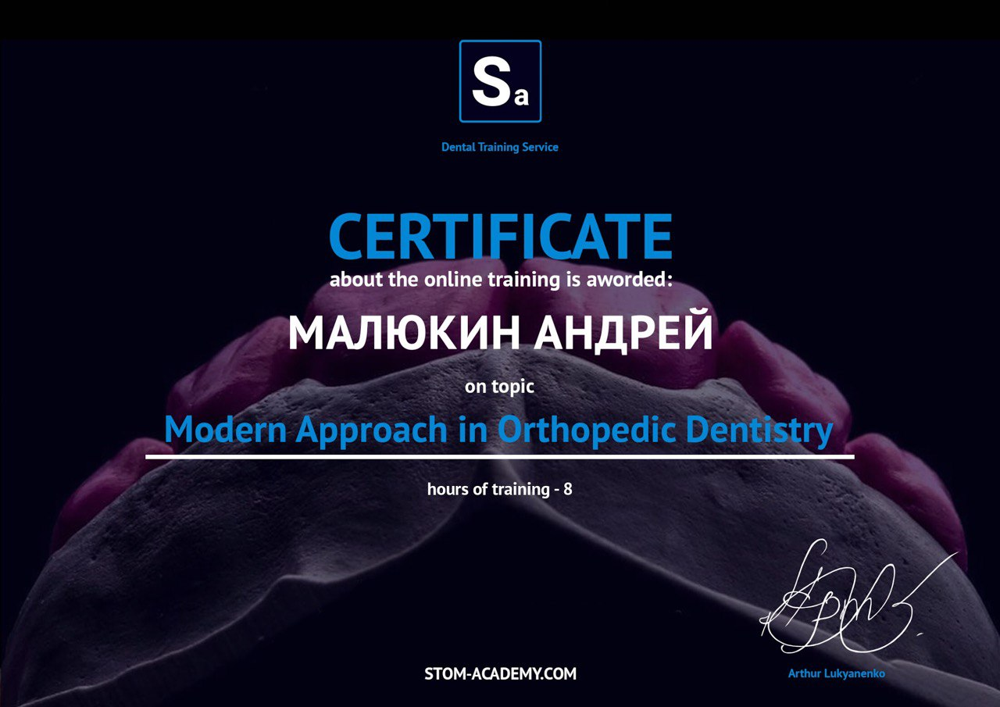
Композитні реставрації фронтальних зубів, відновлення анатомії за технологією пошарового нанесення.
Ультратонкі керамічні вініри з пресованої кераміки E-max. Природна прозорість і довговічність.
Коронки з диоксиду цирконію та E-max, виготовлені за цифровим протоколом CAD/CAM.
Одиночні коронки на імплантах, мостоподібні конструкції, протоколи All-on-4 / All-on-6.
Інтраоральне сканування iTero / 3Shape, моделювання exocad, 3D-друк примірок, фрезерування.
«Зберігаємо те, що можна зберегти, і пропонуємо лише те, що справді потрібно» — головний принцип роботи доктора Малюкіна та всієї команди Harmony Clinic. На кожному прийомі пацієнт отримує детальний план лікування з аргументацією кожного етапу, прозоре кошторисування і фотодокументацію «до / після».
Малюкін Андрій особисто супроводжує комплексні випадки: від первинного огляду та діагностики (3D-КТ, інтраоральне сканування) до фіналу робіт і подальшого спостереження.
«Величезне спасибі нашому незамінному лікарю Малюкіну Андрію Віталійовичу за завжди швидко та якісно надану допомогу. Дуже приємно та радісно бачити, як від першого мого прийому в міській стоматологічній поліклініці Ви розвинулися до власної затишної клініки. При цьому утримуєте в цьому божевільному світі прийнятні ціни. Хочу побажати Вам міцного здоров'я та миру.»
«Хочу висловити величезну подяку клініці Harmony dental clinic за професіоналізм, уважне ставлення та комфортну атмосферу, а найголовніше за якісну та прекрасну роботу!... Лікар Андрій Віталійович — професіонал своєї справи, я шалено рада і задоволена результатом. Особливо сподобалося, що лікар фіксував кожен етап лікування за допомогою знімків... Такий підхід вселяє довіру. Дуже професійно!»
«Хочу висловити величезну подяку лікарю Андрію Віталійовичу за уважне ставлення, професіоналізм та якісну роботу! Я прийшла в клініку з гострим болем і мені відразу ж надали допомогу (без запису). До зустрічі з цим лікарем я дуже боялася уколів, а тепер ні! Я дуже рада, що потрапила в цю клініку... Рекомендую всім хто хоче лікувати зуби без страху, стресу і болю, приходьте сюди!»